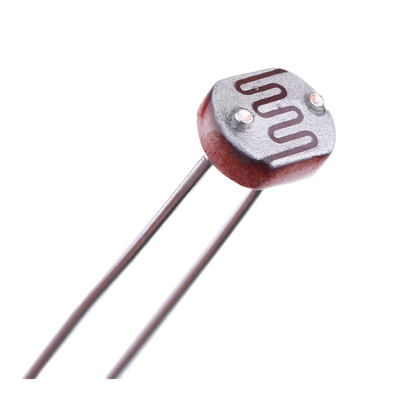
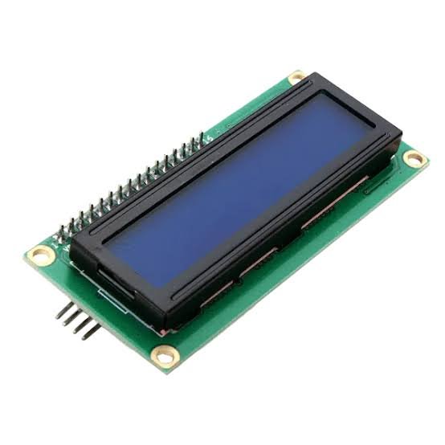
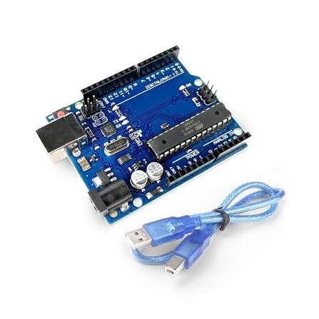
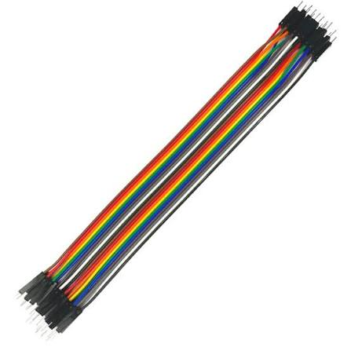
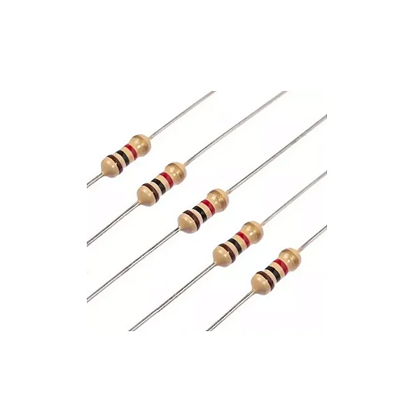
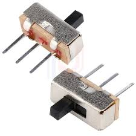

PROJETO INTEGRADOR
PROJETO INTEGRADORMateriais do projeto
- LDR (Light Dependent Resistor)
- LCD 16×2
- Arduino UNO
- Jumpers
- Resistores (100K 1K)
- Interruptor Deslizante Ss12d10 Alavanca

O LDR é um componente eletrônico cuja resistência elétrica varia conforme a intensidade da luz que incide sobre sua superfície. Ele é produzido por um material semicondutor, quando iluminado, ocorre um deslocamento de elétrons que altera sua resistência de forma proporcional à luz recebida.

O LCD é um dispositivo eletrônico alfanumérico que controla a passagem de luz para exibir informações visuais. Ele possui capacidade para apresentar até 32 caracteres simultaneamente, distribuídos em 2 linhas de 16 colunas. O componente funciona por meio de um controlador integrado que recebe as instruções do microcontrolador.

O Arduino UNO R3 é uma placa de desenvolvimento equipada com o microcontrolador ATmega328P, contando com 14 pinos digitais de entrada e saída, 6 portas analógicas, entrada USB, barramento ICSP e um botão de reinicialização.

Os jumpers são pequenos condutores elétricos usados na eletrônica para fazer rápidas conexões entre pontos de um circuito.

Os resistores são componentes passivos utilizados para limitar a corrente e dividir a tensão elétrica no circuito. Associados ao sensor LDR, formam um divisor de tensão de dupla escala que otimiza a sensibilidade da leitura analógica no Arduino UNO R3 em diferentes condições de luminosidade.

O interruptor deslizante é um componente eletromecânico utilizado para controlar o fluxo de eletricidade em circuitos elétricos e eletrônicos.
Conversão do sinal analógico para intensidade luminosa (lux)
A conversão da leitura analógica fornecida pelo Arduino em intensidade luminosa é realizada em duas etapas. Inicialmente, determina-se a resistência elétrica do LDR a partir da tensão medida no circuito. Em seguida, utiliza-se essa resistência para estimar a iluminância, expressa em lux.
1. Determinação da resistência elétrica
O cálculo é fundamentado no princípio do divisor de tensão, formado por duas resistências conectadas em série. Nesse circuito, a tensão de alimentação é distribuída proporcionalmente aos valores das resistências.
O conversor analógico-digital (ADC) do Arduino UNO R3 transforma a tensão recebida na entrada analógica em um valor numérico entre 0 e 1023, devido à sua resolução de 10 bits. Considerando uma referência nominal de 5 V, a tensão medida pode ser expressa por:
V = (ADC / 1023) × 5
Considerando o resistor fixo conectado ao 5 V e o LDR conectado ao GND, a tensão de saída também pode ser determinada pela relação:
V = 5 × RLDR / (Rfixo + RLDR)
Dedução da fórmula da resistência
Igualando as duas expressões da tensão:
(ADC / 1023) × 5 = 5 × RLDR / (Rfixo + RLDR)
Cancelando o fator 5 e realizando a multiplicação cruzada:
ADC × (Rfixo + RLDR) = 1023 × RLDR
Desenvolvendo a expressão:
ADC × Rfixo = RLDR × (1023 - ADC)
Isolando a resistência do sensor, obtém-se:
RLDR = Rfixo × ADC / (1023 - ADC)
Portanto, a resistência elétrica do LDR pode ser calculada diretamente a partir da leitura analógica e do valor do resistor fixo utilizado no circuito. Essa expressão considera especificamente a configuração em que o resistor fixo está conectado ao 5 V e o LDR ao GND.
2. Determinação da intensidade luminosa
A resistência elétrica do LDR varia conforme a iluminação incidente. De maneira geral, quanto maior a intensidade luminosa, menor será sua resistência. Essa relação apresenta comportamento não linear e pode ser representada aproximadamente por uma função de potência:
R = R10 × (10 / L)γ
O datasheet da família GL55, que inclui o modelo GL5528, apresenta uma resistência entre 10 kΩ e 20 kΩ para uma iluminação de 10 lux. Adotando o valor médio dessa faixa, obtém-se:
R10 = 15.000 Ω
Outro parâmetro necessário é o coeficiente γ (gama), responsável por representar a resposta do sensor às variações de iluminação. Como não foi realizada uma caracterização experimental individual, foi adotado o valor aproximado:
γ = 0,7
Dedução da fórmula de conversão para lux
Partindo do modelo matemático de potência:
R = R10 × (10 / L)γ
Dividindo os dois lados por R10:
R / R10 = (10 / L)γ
Aplicando a potência inversa, 1/γ:
(R / R10)1/γ = 10 / L
Finalmente, isolando a iluminância:
L = 10 × (R10 / R)1/γ
Substituindo os parâmetros adotados, a expressão utilizada no projeto é:
L = 10 × (15.000 / R)1/0,7
O resultado representa uma estimativa da iluminância incidente sobre o sensor, expressa em lux (lx). Como os parâmetros são aproximados, os valores podem apresentar diferenças em relação à iluminação real.
3. Integração das duas conversões
As duas expressões são aplicadas sequencialmente. Primeiro, a leitura digital é utilizada para determinar a resistência elétrica do LDR. Posteriormente, essa resistência é substituída no modelo matemático de resposta fotossensível, permitindo estimar a intensidade luminosa.
ADC → RLDR → Lux
Para melhorar a precisão, seria necessária uma calibração experimental com um luxímetro, permitindo ajustar os parâmetros matemáticos conforme o comportamento real do sensor.
Programação e funcionamento do Arduino
O Arduino UNO R3 é responsável pela aquisição, pelo processamento e pela apresentação dos dados. Sua programação foi desenvolvida em C++, permitindo realizar continuamente a leitura do LDR, identificar o resistor selecionado, calcular sua resistência e estimar a intensidade luminosa.
1. Bibliotecas utilizadas
Para controlar os componentes e executar os cálculos, foram utilizadas três bibliotecas:
- Wire.h: permite a comunicação I2C entre o Arduino e dispositivos externos.
- LiquidCrystal_I2C.h: disponibiliza funções para controlar o display LCD por meio da comunicação I2C.
- math.h: disponibiliza funções matemáticas, incluindo pow(), utilizada para realizar potenciações.
No Arduino UNO R3, a comunicação I2C utiliza os pinos A4 (SDA), responsável pelos dados, e A5 (SCL), responsável pelo sinal de sincronização.
2. Definição dos pinos e parâmetros
Os pinos utilizados para receber os sinais do circuito são definidos por constantes:
const int pinoLDR = A0;
const int pino1k = A1;
const int pino100k = A2;
const float R10 = 15000.0;
const float GAMMA = 0.7;A entrada A0 recebe a leitura analógica do divisor de tensão. Já as entradas A1 e A2 são utilizadas para identificar a seleção do resistor de 1 kΩ ou de 100 kΩ.
Os parâmetros R10 e GAMMA armazenam os valores utilizados na conversão para lux. O tipo float permite trabalhar com números decimais, enquanto const indica que os valores não serão modificados durante a execução.
3. Inicialização do sistema: setup()
A função setup() é executada uma única vez, quando o Arduino é ligado ou reiniciado. Nela são realizadas as configurações iniciais do display e das entradas utilizadas.
lcd.init();
lcd.backlight();
pinMode(pino1k, INPUT);
pinMode(pino100k, INPUT);Os comandos inicializam o display, ativam sua iluminação e configuram as entradas responsáveis pela identificação do resistor selecionado.
4. Processamento das informações: loop()
A função loop() executa continuamente enquanto o Arduino permanece ligado. Nela são realizadas a identificação do resistor, a leitura do sensor e as operações matemáticas.
Inicialmente, o programa identifica qual resistor está selecionado. Em seguida, obtém o valor analógico do LDR por meio da função analogRead(), que retorna um número entre 0 e 1023.
Com essas informações, são realizadas as duas conversões matemáticas apresentadas anteriormente.
float resistencia = 0;
float lux = 0;
if (Rfixo > 0 && leitura > 0 && leitura < 1023) {
resistencia = Rfixo *
((float)leitura / (1023.0 - leitura));
lux = 10.0 * pow(R10 / resistencia, 1.0 / GAMMA);
}A primeira operação determina a resistência elétrica do LDR. A segunda utiliza esse resultado para calcular a iluminância estimada.
A estrutura condicional if verifica se os valores utilizados são válidos, evitando divisões por zero e operações matematicamente indefinidas. A conversão (float) garante que a divisão seja realizada utilizando números decimais.
5. Exibição dos resultados no LCD
Após o processamento, os valores calculados são apresentados no display LCD 16x2. Dessa maneira, é possível acompanhar a intensidade luminosa estimada e as informações referentes ao resistor selecionado, sem a necessidade de utilizar um computador.
Ao final de cada ciclo, o comando delay(500) estabelece uma pausa de 500 milissegundos, permitindo atualizar as informações aproximadamente duas vezes por segundo.
Considerações sobre o funcionamento
O sistema desenvolvido integra conceitos de eletricidade, instrumentação e programação. A variação da luminosidade modifica a resistência do LDR e, consequentemente, a tensão no divisor de tensão. Essa alteração é convertida em um valor digital pelo ADC do Arduino, permitindo realizar os cálculos necessários.
A partir da leitura analógica, determina-se a resistência elétrica do sensor e, posteriormente, estima-se a iluminância por meio do modelo matemático adotado. Os resultados são então apresentados no display LCD.
Entretanto, os valores devem ser interpretados como estimativas, pois os parâmetros utilizados não foram obtidos por meio de uma calibração individual do sensor. Fatores como as características do componente, a temperatura e as condições de utilização também podem influenciar os resultados.
Apesar dessas limitações, o projeto demonstra na prática a aplicação do divisor de tensão, da conversão analógico-digital e do processamento de sinais para a construção de um sistema de medição de luminosidade.